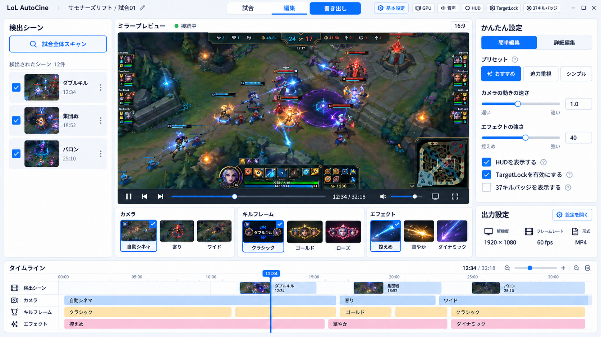
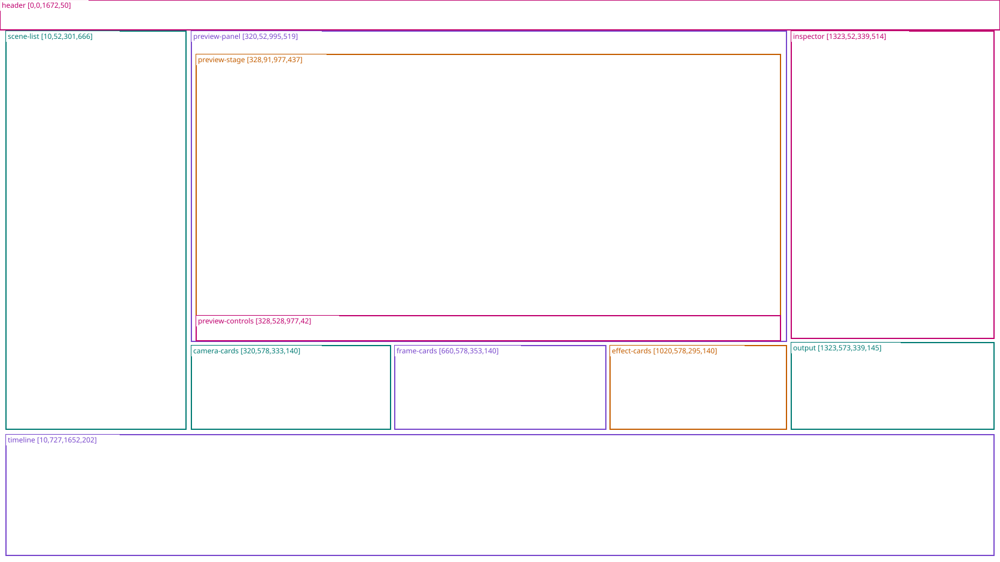
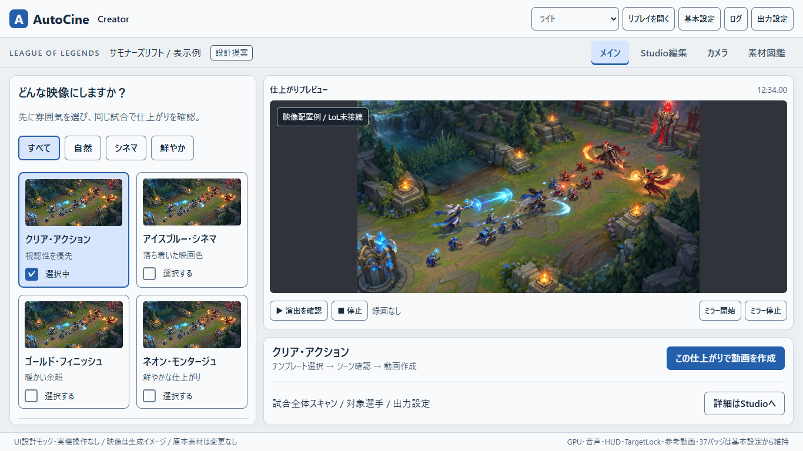
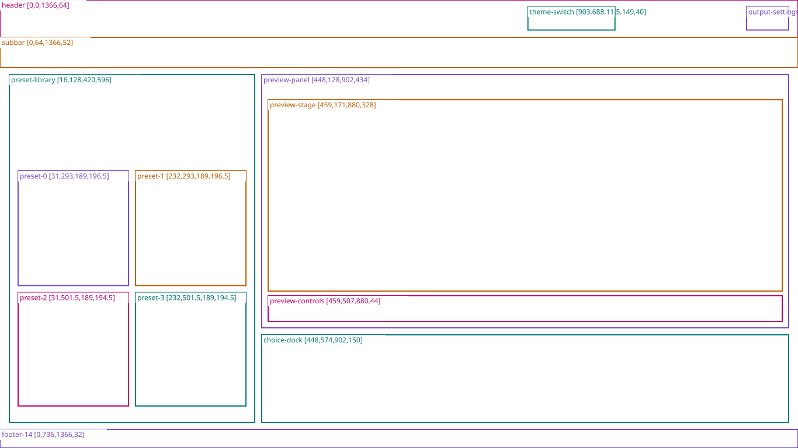
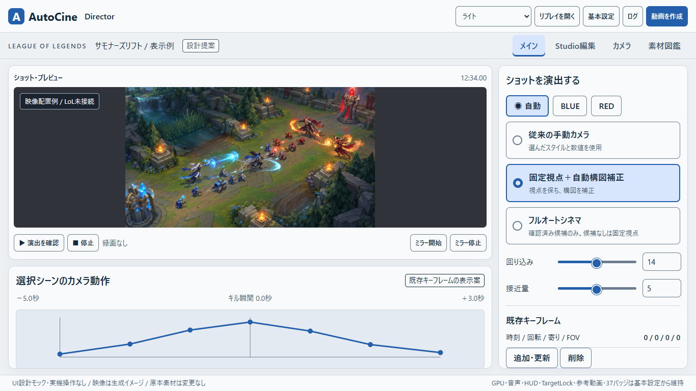
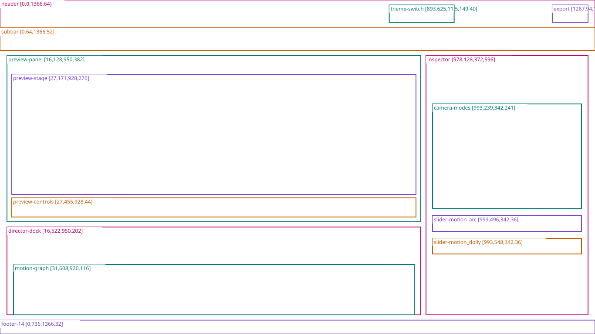
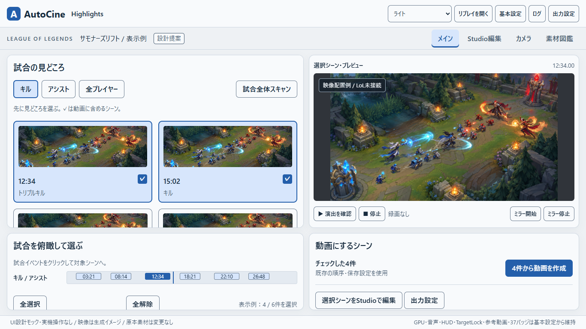
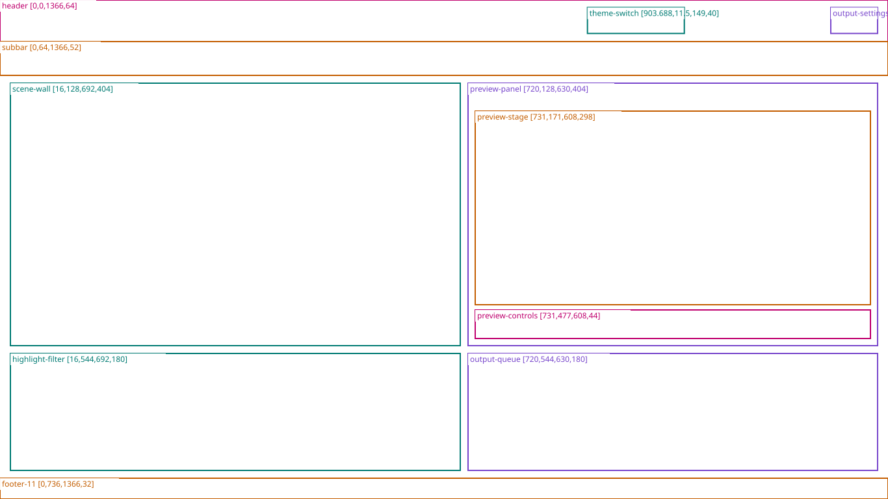

L03-N ／ 旧案3 ハイブリッドplan03_hybrid_normal_v2.png ／ 1672×940 ／ light画面仕様 ／ 原本 ／ 寸法図
R-B-main-1366x768 ／ 新B CreatorB_main_1366x768.png ／ 1366×768 ／ light画面仕様 ／ 原本 ／ 寸法図
R-C-main-1366x768 ／ 新C DirectorC_main_1366x768.png ／ 1366×768 ／ light画面仕様 ／ 原本 ／ 寸法図
R-D-main-1366x768 ／ 新D HighlightsD_main_1366x768.png ／ 1366×768 ／ light画面仕様 ／ 原本 ／ 寸法図